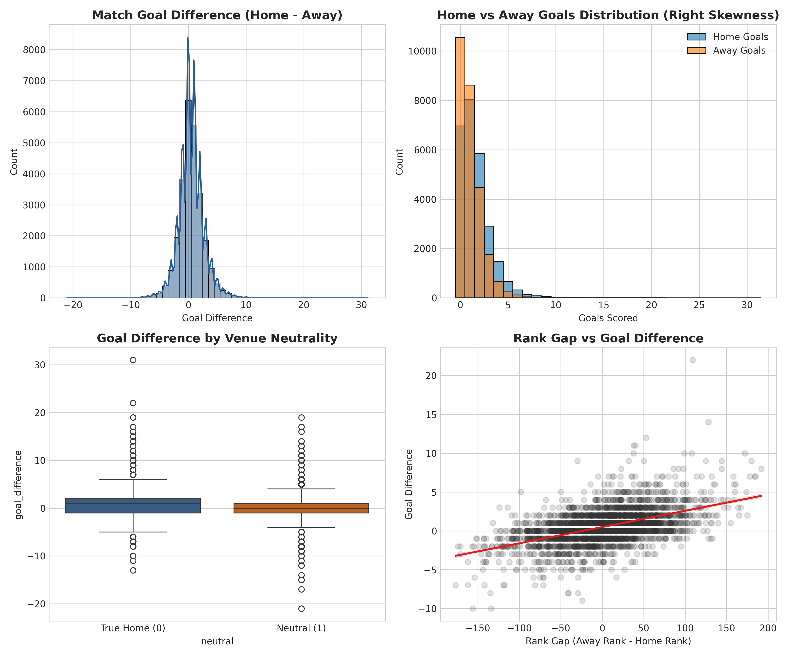

I really enjoy data science and sports analytics. One of my favorite applications is modeling international soccer match outcomes and predicting goal differentials based on historical FIFA rankings.
My project uses historical data from 1872 to the present, focusing on post-1993 matches to analyze home ground advantage and train machine learning algorithms such as OLS Linear Regression and XGBoost Gradient Boosting.

To learn more about international soccer rankings and match records, explore the official FIFA Men's World Rankings or view our codebase on GitHub.